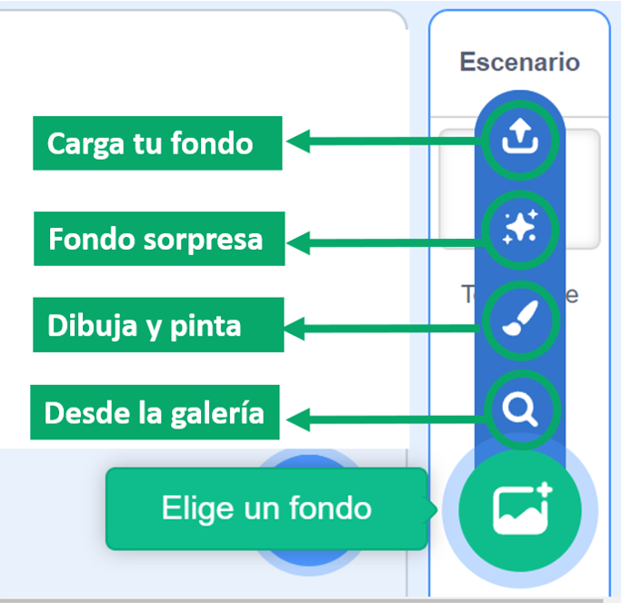
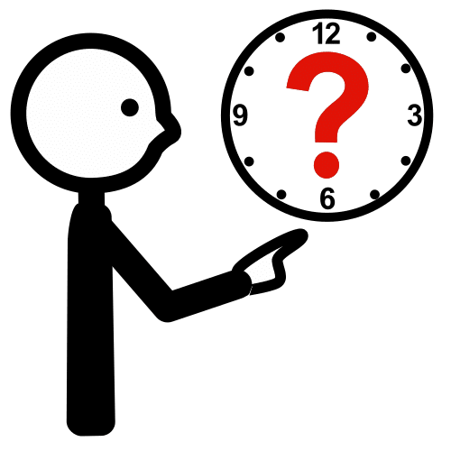

La pantalla del juego debe ser vistosa y atractiva para el jugador.
El efecto de una pantalla dinámica y atractiva se consigue con el escenario de Scratch y el uso que hagamos con los fondos.
En esta página vas a aprender a agregar fondos con distintas herramientas y a determinar los mejores momentos para cambiarlos.
Es importante que el escenario se adapte al contexto de tu videojuego, así parecerá todo más real e invitará a todos a jugar.
¡Ánimo, será fantástico!
1. Escenarios para tu videojuego
Es importante que cuides los escenarios de tu videojuego. En las siguientes pestañas vas a aprender cómoagregar los fondos que necesites y cuándo cambiarlos para dar más dinamismo y realismo al juego.
Cómo

Al igual que en los objetos, tienes las mismas opciones para insertar un fondo. En un videojuego lo más interesante de cada opción puede ser lo siguiente:
Desde la galería tienes muchas temáticas, la de fantasía es una de las que más te puede ayudar.
La opción sorpresa es divertida pero no te garantiza un resultado óptimo.
Con la opción pinta puedes realizar los mismos pasos que has aprendido para los objetos y disfraces.
Cargar fondos guardados en tu dispositivo. En internet puedes encontrar muchos fondos interesantes e imágenes que puedes utilizar también con este fin. También puedes cargar tus propios dibujos.
Cuándo

Una vez que tienes preparados los fondos que necesitas, debes plantearte cuándo vas a cambiarlos. tienes varias opciones:
De forma continua para dar sensación de movimiento del fondo. Se utiliza con fondos muy parecidos.
En los cambios de nivel del juego.
Al salvar vidas.
Cuando un personaje se encuentra a otro.
En las colisiones.
Cuando se termina la partida.
Vídeo
En el siguiente vídeo se explica cómo agregar fondos en Scratch:
Lectura facilitada
Los escenarios del videojuego son importantes.
Los escenarios dan realismo.
Los escenarios también dan movimiento.
En Scratch los escenarios son fondos.
Es importante saber:
-Cómo añadir fondos.
-Cuándo cambiar fondos.
Las herramientas se explican
en las siguientes pestañas.
Cómo
Para poner un fondo
tienes estas opciones:
1.Galería.
En la galería hay muchas temáticas.
La de fantasía es muy buena
2. Pinta.
Puedes pintar tus propios fondos.
3. Al azar.
Eliges un fondo sorpresa.
Otras opciones nos aseguran éxito.
4. Carga tu fondo.
Cargas un fondo desde tu dispositivo.
Puede ser de internet o
tu puedes crear el fondo.
Cuándo
Los cambios de fondos
se hacen en algunos momentos.
Estos son los momentos:
-Siempre.
-En las colisiones.
-Cuando un personaje se encuentra con otro.
-Al salvar vidas
-Cuando pasas de nivel.
-Al final de la partida.
Vídeo
El vídeo explica el uso de fondos.
Audio
2. Pantallas para jugar
En esta actividad vas a elegir los fondos que van a convertirse en las pantallas de juego.
Puedes consultar tu guion para recordar los lugares donde se va a desarrollar el juego, te ayudará a seleccionar los mejores fondos o pantallas para tu videojuego. También tienes que tener en cuenta los momentos en los que vas a cambiarlos porque influirá en el tipo de fondo.
Al igual que sucede con los objetos y disfraces tienes varias opciones para hacerlo.
Te propongo que practiques con las opciones siguientes. Elige la que veas más adecuada para ti. Una vez que consigas resultados positivos, puedes atreverte con las siguientes.
OPCIÓN A: Elige bien
Recuerda las opciones que tiene Scratch para elegir fondos. Para ello selecciona en la lista desplegable la opción correcta.
OPCIÓN B: Visita la galería
Visita la galería de Scratch y elige los fondos que mejor se adapten a tu videojuego. Recuerda que están clasificados por temáticas: fantasía, música, deportes, exteriores, interiores, espacio, bajo el mar y patrones.
OPCIÓN C: Carga tus pantallas
Si los fondos de Scratch no te convencen puedes buscar en internet, hay muchas imágenes de fondos libres de derechos de autor que te pueden servir para tu proyecto. Una vez que las encuentres sólo tienes que guardarlas en tu ordenador e insertarlas con la opción Carga.
Con esta misma opción también puedes subir un dibujo hecho por ti en papel.
OPCIÓN D: Crea tus fondos
Esta opción es un poco más compleja, pero mucho más creativa y personalizada. Se trata de crear tus propios fondos con el editor gráfico de Scratch.
Te doy algunas sugerencias:
Fondos de distintos colores.
Fondos de colores lisos con objetos pintados con las herramientas de pintar.
Fondos con textos.
Fondos con trazos de diferentes colores y texturas.
 La pantalla del juego debe ser vistosa y atractiva para el jugador.
La pantalla del juego debe ser vistosa y atractiva para el jugador.